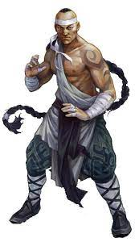

The Classes
Adventurers are extraordinary people, driven by a thirst for excitement into a life that others would never dare lead. They are heroes, compelled to explore the dark places of the world and take on the challenges that lesser women and men can't stand against.
This page is the list of the official classes and subclasses of 5e. Each entry will links to the subclass pages of each class as well as miscellaneous features.
Artificer <-- Main
Makers of magic-infused objects. They seek to craft durable, useful, magical items.
Subclasses
Quick Links
Barbarian <-- Main
A fierce warrior of primitive background who can enter a battle rage

Subclasses
Bard <-- Main
An inspiring magician whose power echoes the music of creation
Subclasses
Cleric <-- Main
A priestly champion who wields divine magic in service of a higher power
Subclasses
Druid <-- Main
A priest of the Old Faith, wielding the powers of nature and adopting animal forms

Subclasses
Fighter <-- Main
A master of martial combat, skilled with a variety of weapons and armor

Subclasses
- Arcane Archer
- Banneret
- Battle Master
- Cavalier
- Champion
- Echo Knight
- Eldritch Knight
- Psi Warrior
- Rune Knight
- Samurai
Quick Links
Monk <-- Main
A martial artist, harnessing the power of the body in pursuit of physical and spiritual perfection
Subclasses
- Way of the Ascendant Dragon
- Way of the Astral Self
- Way of the Drunken Master
- Way of the Four Elements
- Way of the Kensei
- Way of the Long Death
- Way of Mercy
- Way of the Open Hand
- Way of Shadow
- Way of the Sun Soul
Quick Links
Paladin <-- Main
A holy warrior bound to a sacred oath that uses the power of their faith as a weapon
Subclasses
- Oath of the Ancients
- Oath of Conquest
- Oath of the Crown
- Oath of Devotion
- Oath of Glory
- Oath of Redemption
- Oath of Vengeance
- Oath of the Watchers
- Oathbreaker
Quick Links
Ranger <-- Main
A warrior who uses martial prowess and nature magic to combat threats on the edges of civilization
Subclasses
- Beast Master Conclave
- Drakewarden
- Fey Wanderer
- Gloom Stalker Conclave
- Horizon Walker Conclave
- Hunter Conclave
- Monster Slayer Conclave
- Swarmkeeper Conclave
Quick Links
Rogue <-- Main
A scoundrel who uses stealth and trickery to overcome obstacles and enemies
Subclasses
Sorcerer <-- Main
A spellcaster who draws on inherrent magic from a gift or bloodline
Subclasses
- Aberrant Mind
- Clockwork Soul
- Divine Soul
- Draconic
- Lunar Sorcery
- Shadow Magic
- Storm Sorcery
- Wild Magic
Quick Links
Warlock <-- Main
A wielder of magic that is derived from a bargain with an extraplanar entity
Subclasses
Quick Links
Wizard <-- Main
A scholarly magic-user capable of manipulating the structures of reality.